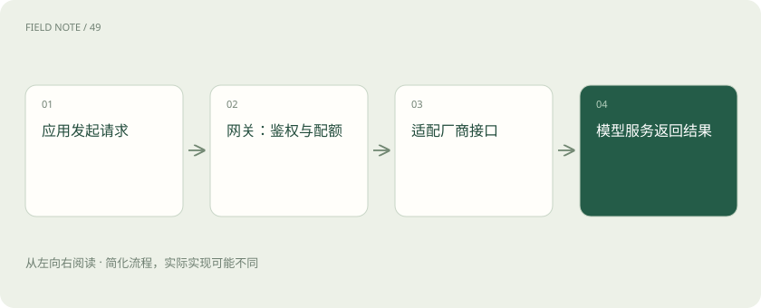

先读哪些知识
先用一个类比理解
公司前台检查访客身份、记录来访、联系部门。前台本身不完成部门的专业工作；网关通常也不负责运行模型的主要计算。
类比只帮助建立直觉，不等同于技术的完整机制。
一图看懂

统一入口不等于统一全部能力
不同厂商的参数、工具调用与多模态格式可能不同。适配层可以统一常用接口，但不能保证每项特性都完全一致。切换模型后仍应验证应用行为。
治理能力解决多人共用问题
身份认证回答“你是谁”，授权回答“你能用什么”，限流控制请求速率，配额或预算控制累计用量。密钥应在服务端保护，日志中的提示词也可能含敏感信息。
可靠性有代价
网关可以处理超时、重试和故障降级，但重试可能增加费用和延迟。已经开始流式输出后再换模型更复杂；工具动作重试还需要防止重复执行。
放进真实场景
SCENARIO
研发和客服共用模型平台时，各自使用应用密钥与预算。财务看聚合成本，应用只看到自己有权访问的模型。
别踩这个误区
网关不是 GPU 推理引擎；限流、预算和账单统计也不是同一个计数器。
想一想
统一 API 后能保证所有模型行为一致吗？
不能。上下文、参数和能力边界仍可能不同，需评测验证。
关联阅读
资料与边界
本文为原创知识讲解。类比和图示经过简化；示例数字不代表实测或报价。整理日期：2026-11-04。文末列出对应技术的原始资料，具体功能与版本支持请以原文为准。
按完整目录逐篇阅读